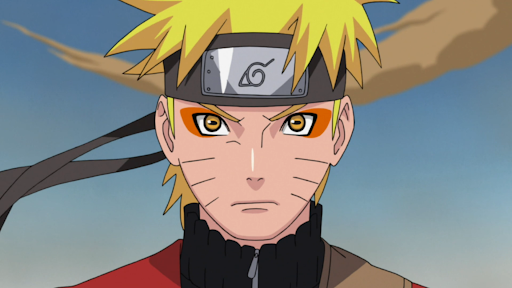
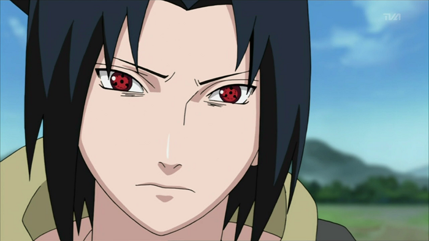
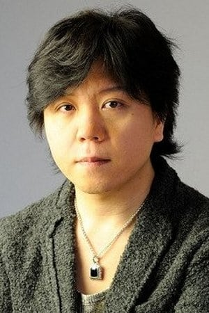
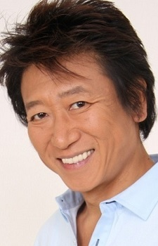
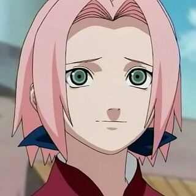
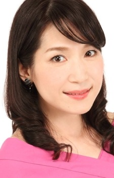

Naruto Uzumaki (うずまきナルト, Uzumaki Naruto)
Jest shinobi z Konohagakure oraz obecną reinkarnacją Asury Ōtsutsuki. Stał się jinchūriki Dziewięcioogoniastego Lisa w dniu swoich narodzin co spowodowało, że był unikany przez większość mieszkańców w czasie swojego dzieciństwa.

Junko Takeuchi
(jap. 竹内 順子 Takeuchi Junko, ur. 5 kwietnia 1972 r. w Prefekturze Saitama) – japońska seiyū. Znana głównie jako Naruto Uzumaki w anime Naruto.

Sasuke Uchiha (うちはサスケ, Uchiha Sasuke)
jest jednym z ostatnich, ocalałych członków klanu Uchiha oraz aktualną reinkarnacją Indry Ōtsutsuki. Po tym jak jego starszy brat, Itachi, wymordował ich klan, Sasuke postawił sobie za cel pomszczenie swoich bliskich poprzez zabicie swojego brata.Jest shinobi z Konohagakure oraz obecną reinkarnacją Asury Ōtsutsuki. Stał się jinchūriki Dziewięcioogoniastego Lisa w dniu swoich narodzin co spowodowało, że był unikany przez większość mieszkańców w czasie swojego dzieciństwa.

Noriaki Sugiyama
(jap. 杉山 紀彰 Sugiyama Noriaki, ur. 9 marca 1976) – japoński seiyū mający na koncie wiele ról w anime, grach wideo i filmach. Występował w roli Sasuke Uchiha z anime Naruto oraz Uryū Ishida z anime Bleach. Przez fanów nazywany jest zdrobniale „Non-tan”. Jest to pseudonim nadany mu przez Junko Takeuchi w programie radiowym „O-! Naruto Nippon!” nadawanym w Japonii.

Kakashi Hatake (はたけカカシ, Hatake Kakashi)
jest shinobi pochodzącym z klanu Hatake z Konohagakure. Znany jako Kakashi z Sharinganem (写輪眼のカカシ, Sharingan no Kakashi), jest jednym z najbardziej utalentowanych ninja pochodzących z Konohy; regularnie proszony o radę i przywództwo, pomimo jego osobistej niechęci do odpowiedzialności. Jako opiekun Drużyny 7, Kakashi przykłada dużą wagę do nauki o tym, jak istotna jest współpraca - pielęgnuje tym samym wartości przekazane mu przez przyjaciela z dzieciństwa, Obito Uchihę. Po zakończeniu Czwartej Światowej Wojny Shinobi, Kakashi został Szóstym Hokage (六代目火影, Rokudaime Hokage; dosł. "Szósty Cień Ognia").

Kazuhiko Inoue
(jap. 井上 和彦 Inoue Kazuhiko, ur. 26 marca 1954 w Kanagawie) – japoński seiyū mający na koncie wiele ról w anime, grach wideo, filmach i serialach, wokalista, narrator, reżyser dźwięku.

Sakura Uchiha (うちはサクラ, Uchiha Sakura)
jest kunoichi z Konohagakure. Po byciu przypisaną do Drużyny 7, Sakura szybko odkryła, że była źle przygotowana do obowiązków shinobi. Jednakże, po treningu pod czujnym okiem Sannina Tsunade, przezwyciężyła swoje słabości i stała się rozpoznawalna jako jedna z najlepszych medycznych ninja na świecie.

Chie Nakamura
(jap. 中村 千絵 Nakamura Chie, ur. 14 maja 1978) – japońska seiyū pochodząca z Tokio, pracuje dla AXL-One. Najbardziej znana z roli Sakury Haruno w anime Naruto.
